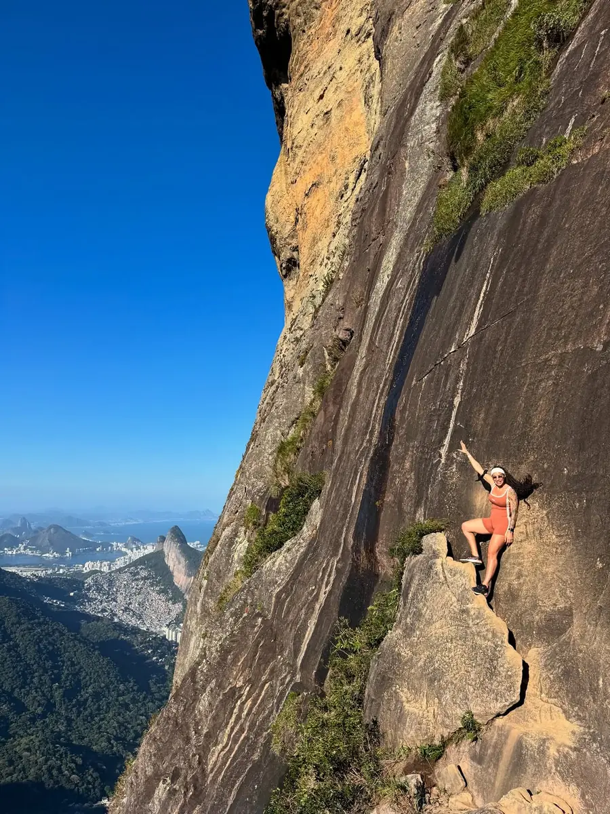

Mais procurada Pedra da GáveaPedra da
Gávea
R$ 200por pessoaPrivativo: R$ 500 por pessoa
A maior pedra à beira-mar do mundo e uma das trilhas mais desafiadoras do Rio. São 4 km de subida com via ferrata, nascente e a escalada da Carrasqueira, até a vista da cidade inteira lá de cima.
- Duração
- 6 a 8 h
- Distância
- 4 km
- Nível
- Médio/alto
- Escalada
- 1º grau
Perfil da subidaaproximado
Guia o tempo todo
Equipamento de escalada
Fotos profissionais
+ Drone R$ 80
Ponto de encontro: Estrada Sorimã, Barra da Tijuca